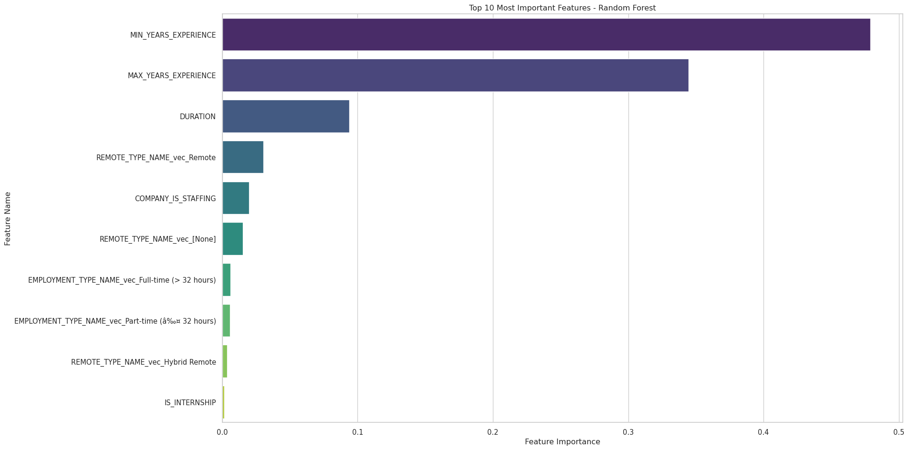
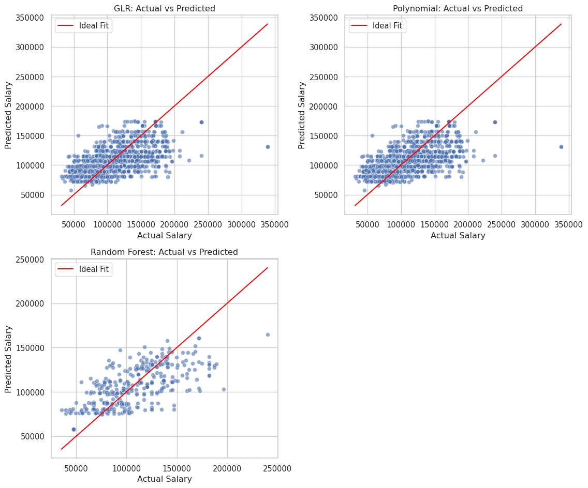

[Stage 100:> (0 + 1) / 1] Assignment 04
1 Load the Dataset
2 Feature Engineering
[Stage 101:> (0 + 1) / 1] [Stage 104:> (0 + 1) / 1] [Stage 108:> (0 + 1) / 1] [Stage 111:> (0 + 1) / 1] +------+--------------------------------------+--------------------------------------+
|SALARY|features |features_poly |
+------+--------------------------------------+--------------------------------------+
|192800|(9,[0,1,4,7],[6.0,55.0,1.0,1.0]) |(9,[0,1,4,7],[6.0,55.0,1.0,1.0]) |
|125900|(9,[0,1,4,7],[12.0,18.0,1.0,1.0]) |(9,[0,1,4,7],[12.0,18.0,1.0,1.0]) |
|118560|[5.0,20.0,0.0,1.0,0.0,1.0,0.0,1.0,0.0]|[5.0,20.0,0.0,1.0,0.0,1.0,0.0,1.0,0.0]|
|192800|(9,[0,1,4,7],[6.0,55.0,1.0,1.0]) |(9,[0,1,4,7],[6.0,55.0,1.0,1.0]) |
|116500|(9,[0,1,4,7],[12.0,16.0,1.0,1.0]) |(9,[0,1,4,7],[12.0,16.0,1.0,1.0]) |
+------+--------------------------------------+--------------------------------------+
only showing top 5 rows
Training Data Count: 11604
Testing Data Count: 28123 Train/Test Split
[Stage 114:> (0 + 1) / 1] [Stage 117:> (0 + 1) / 1] Training Data Count: 11604
Testing Data Count: 2812- I chose the 80/20 split that was discussed during class, the data set is large enough that this split should be fine, and should account for enough of the data.
4 Regression_DF
+------+--------------------+--------------------+--------+-------------+-------------------+----------------+----------------------+------------------------------------------------------------------------------------+
|SALARY|MIN_YEARS_EXPERIENCE|MAX_YEARS_EXPERIENCE|DURATION|IS_INTERNSHIP|COMPANY_IS_STAFFING|REMOTE_TYPE_NAME|EMPLOYMENT_TYPE_NAME |EDUCATION_LEVELS_NAME |
+------+--------------------+--------------------+--------+-------------+-------------------+----------------+----------------------+------------------------------------------------------------------------------------+
|131100|2 |2 |11 |false |false |[None] |Full-time (> 32 hours)|[\n "Bachelor's degree"\n] |
|136950|3 |3 |28 |false |false |Remote |Full-time (> 32 hours)|[\n "Bachelor's degree",\n "Master's degree",\n "Ph D or professional degree"\n]|
|136950|3 |3 |28 |false |false |Remote |Full-time (> 32 hours)|[\n "Bachelor's degree",\n "Master's degree",\n "Ph D or professional degree"\n]|
|104000|3 |3 |8 |false |false |[None] |Full-time (> 32 hours)|[\n "Bachelor's degree"\n] |
|80000 |3 |3 |37 |false |false |[None] |Full-time (> 32 hours)|[\n "Bachelor's degree"\n] |
+------+--------------------+--------------------+--------+-------------+-------------------+----------------+----------------------+------------------------------------------------------------------------------------+
only showing top 5 rows
5 Linear Regression Model (OLS)
[Stage 121:> (0 + 1) / 1] [Stage 124:> (0 + 1) / 1] +------+---------------------------------------+
|SALARY|features |
+------+---------------------------------------+
|131100|(10,[0,1,2,5,8],[2.0,2.0,11.0,1.0,1.0])|
|136950|(10,[0,1,2,6,8],[3.0,3.0,28.0,1.0,1.0])|
|136950|(10,[0,1,2,6,8],[3.0,3.0,28.0,1.0,1.0])|
|104000|(10,[0,1,2,5,8],[3.0,3.0,8.0,1.0,1.0]) |
|80000 |(10,[0,1,2,5,8],[3.0,3.0,37.0,1.0,1.0])|
+------+---------------------------------------+
only showing top 5 rows
[Stage 128:> (0 + 1) / 1] [Stage 131:> (0 + 1) / 1] [Stage 134:> (0 + 1) / 1] (2243, 14)
(1848, 14)
(395, 14)[Stage 137:> (0 + 1) / 1] Intercept: 75819.4000
Coefficients:
Feature 1: 4215.6844
Feature 2: 4215.6844
Feature 3: -23.7725
Feature 4: -23942.2288
Feature 5: -98.6466
Feature 6: 6430.6643
Feature 7: 16463.9439
Feature 8: 655.1948
Feature 9: -9251.7034
Feature 10: -12761.7200
---Regression Summary---
Coefficient Standard Errors: ['57432.0320', '57432.0320', '40.9532', '12518.4270', '1651.7511', '5327.5134', '5421.5678', '6892.7578', '7503.5432', '8182.7045', '9011.3793']
T-values: ['0.0734', '0.0734', '-0.5805', '-1.9126', '-0.0597', '1.2071', '3.0367', '0.0951', '-1.2330', '-1.5596', '8.4137']
P-values: ['0.9415', '0.9415', '0.5617', '0.0559', '0.9524', '0.2275', '0.0024', '0.9243', '0.2177', '0.1190', '0.0000'][Stage 138:> (0 + 1) / 1] [Stage 141:> (0 + 1) / 1] [Stage 142:> (0 + 1) / 1] nullDeviance: 2728391925894.5732
Residual DF Null: 2232
Residual DF: 2232
AIC: 52299.8485
Deviance: 1738269402130.5212
Explained Variance (from deviance): 0.3628960027212421Length of features: 11
Length of coefficients: 11
Length of standard errors: 11
Length of t-values: 11
Length of p-values: 11| Features | Estimate | Std. Error | t value | P-value | |
|---|---|---|---|---|---|
| 0 | Intercept | 75819.4000 | 57432.0320 | 0.0734 | 0.9415 |
| 1 | MIN_YEARS_EXPERIENCE | 4215.6844 | 57432.0320 | 0.0734 | 0.9415 |
| 2 | MAX_YEARS_EXPERIENCE | 4215.6844 | 40.9532 | -0.5805 | 0.5617 |
| 3 | DURATION | -23.7725 | 12518.4270 | -1.9126 | 0.0559 |
| 4 | IS_INTERNSHIP | -23942.2288 | 1651.7511 | -0.0597 | 0.9524 |
| 5 | COMPANY_IS_STAFFING | -98.6466 | 5327.5134 | 1.2071 | 0.2275 |
| 6 | REMOTE_TYPE_NAME_vec_[None] | 6430.6643 | 5421.5678 | 3.0367 | 0.0024 |
| 7 | REMOTE_TYPE_NAME_vec_Remote | 16463.9439 | 6892.7578 | 0.0951 | 0.9243 |
| 8 | REMOTE_TYPE_NAME_vec_Hybrid Remote | 655.1948 | 7503.5432 | -1.2330 | 0.2177 |
| 9 | EMPLOYMENT_TYPE_NAME_vec_Full-time (> 32 hours) | -9251.7034 | 8182.7045 | -1.5596 | 0.1190 |
| 10 | EMPLOYMENT_TYPE_NAME_vec_Part-time (≤ 32 hours) | -12761.7200 | 9011.3793 | 8.4137 | 0.0000 |
6 Generalized Linear Regression Summary
Based on the features, two significant predictors of salary include remote type name, and employment type name (part time). This makes sense when looking at the data, as remote work tends to pay higher than in person work, so jobs that are broken up by remote, hybrid, or onsite will have different pay scales, while employment type names will be broken up differently because of the difference in salary between part time and full time work. The coefficients have two features that have significant predictors, feature 6 is a positive predictor while feature 10 is a negative predictor. Other features do not have meaningful impacts on the target. The model performance is moderate and could be improved. - Performance - Based on the Explained Variance this model is calculated to have a ~36% of the varience in salary which indicates that there is a moderate performance, but there is still room for improvement. - Other Features - Years of experience, Internships, Full time employment are not significant predictors of salary in this model. This does not mean that they do not have significant impacts on salary as a whole, it just means that in terms of this model that there is not a trend that indicates that these features have a significant impact on salary.
7 Polynomical Regression
+------+---------------------------------------------+
|SALARY|features_poly |
+------+---------------------------------------------+
|131100|(11,[0,1,2,3,6,9],[2.0,4.0,2.0,11.0,1.0,1.0])|
|136950|(11,[0,1,2,3,7,9],[3.0,9.0,3.0,28.0,1.0,1.0])|
|136950|(11,[0,1,2,3,7,9],[3.0,9.0,3.0,28.0,1.0,1.0])|
|104000|(11,[0,1,2,3,6,9],[3.0,9.0,3.0,8.0,1.0,1.0]) |
|80000 |(11,[0,1,2,3,6,9],[3.0,9.0,3.0,37.0,1.0,1.0])|
+------+---------------------------------------------+
only showing top 5 rows
[Stage 144:> (0 + 1) / 1] [Stage 147:> (0 + 1) / 1] [Stage 150:> (0 + 1) / 1] (2243, 16)
(1848, 16)
(395, 16)[Stage 153:> (0 + 1) / 1] Intercept: 75819.4000
Coefficients:
Feature 1: 4215.6844
Feature 2: 4215.6844
Feature 3: -23.7725
Feature 4: -23942.2288
Feature 5: -98.6466
Feature 6: 6430.6643
Feature 7: 16463.9439
Feature 8: 655.1948
Feature 9: -9251.7034
Feature 10: -12761.7200
---Regression Summary---
Coefficient Standard Errors: ['57432.0320', '57432.0320', '40.9532', '12518.4270', '1651.7511', '5327.5134', '5421.5678', '6892.7578', '7503.5432', '8182.7045', '9011.3793']
T-values: ['0.0734', '0.0734', '-0.5805', '-1.9126', '-0.0597', '1.2071', '3.0367', '0.0951', '-1.2330', '-1.5596', '8.4137']
P-values: ['0.9415', '0.9415', '0.5617', '0.0559', '0.9524', '0.2275', '0.0024', '0.9243', '0.2177', '0.1190', '0.0000'][Stage 154:> (0 + 1) / 1] [Stage 157:> (0 + 1) / 1] [Stage 158:> (0 + 1) / 1] nullDeviance: 2728391925894.5732
Residual DF Null: 2232
Residual DF: 2232
AIC: 52299.8485
Deviance: 1738269402130.5212
Explained Variance (from deviance): 0.3628960027212421Length of features: 11
Length of coefficients: 11
Length of standard errors: 11
Length of t-values: 11
Length of p-values: 11| Features | Estimate | Std. Error | t value | P-value | |
|---|---|---|---|---|---|
| 0 | Intercept | 75819.4000 | 57432.0320 | 0.0734 | 0.9415 |
| 1 | MIN_YEARS_EXPERIENCE | 4215.6844 | 57432.0320 | 0.0734 | 0.9415 |
| 2 | MAX_YEARS_EXPERIENCE | 4215.6844 | 40.9532 | -0.5805 | 0.5617 |
| 3 | DURATION | -23.7725 | 12518.4270 | -1.9126 | 0.0559 |
| 4 | IS_INTERNSHIP | -23942.2288 | 1651.7511 | -0.0597 | 0.9524 |
| 5 | COMPANY_IS_STAFFING | -98.6466 | 5327.5134 | 1.2071 | 0.2275 |
| 6 | REMOTE_TYPE_NAME_vec_[None] | 6430.6643 | 5421.5678 | 3.0367 | 0.0024 |
| 7 | REMOTE_TYPE_NAME_vec_Remote | 16463.9439 | 6892.7578 | 0.0951 | 0.9243 |
| 8 | REMOTE_TYPE_NAME_vec_Hybrid Remote | 655.1948 | 7503.5432 | -1.2330 | 0.2177 |
| 9 | EMPLOYMENT_TYPE_NAME_vec_Full-time (> 32 hours) | -9251.7034 | 8182.7045 | -1.5596 | 0.1190 |
| 10 | EMPLOYMENT_TYPE_NAME_vec_Part-time (≤ 32 hours) | -12761.7200 | 9011.3793 | 8.4137 | 0.0000 |
8 Poly Regression Summary
This data has similar impacts to the Linear regression model, Remote_TYPE_NAME having a positive impact and Employment_TYPE_NAME (part time) have a negative impact which are significant predictors of salary according to this model. While other features are not significant predictors. The model performance is the same based on the explained varience which is at 36%.
9 Random Forest Regression
[Stage 159:> (0 + 1) / 1] [Stage 160:> (0 + 1) / 1] [Stage 161:> (0 + 1) / 1] [Stage 163:> (0 + 1) / 1] [Stage 169:> (0 + 1) / 1] 25/10/08 00:59:42 WARN DAGScheduler: Broadcasting large task binary with size 1546.5 KiB
[Stage 171:> (0 + 1) / 1] 25/10/08 00:59:43 WARN DAGScheduler: Broadcasting large task binary with size 2.7 MiB
[Stage 173:> (0 + 1) / 1] [Stage 175:> (0 + 1) / 1] [Stage 176:> (0 + 1) / 1] Random Forest RMSE: 24624.2976
Random Forest R²: 0.4558
Feature Importances: (10,[0,1,2,3,4,5,6,7,8,9],[0.4790147073653835,0.3444487354194342,0.09395909200951295,0.0014699100208343343,0.019885592865900418,0.015141883605094464,0.030348076324909136,0.0036327841559004475,0.006208999364022691,0.005890218869007941])10 Feature Importance Plot
/tmp/ipykernel_3052/4249483686.py:19: FutureWarning:
Passing `palette` without assigning `hue` is deprecated and will be removed in v0.14.0. Assign the `y` variable to `hue` and set `legend=False` for the same effect.

| Feature | Importance | |
|---|---|---|
| 0 | MIN_YEARS_EXPERIENCE | 0.479015 |
| 1 | MAX_YEARS_EXPERIENCE | 0.344449 |
| 2 | DURATION | 0.093959 |
| 6 | REMOTE_TYPE_NAME_vec_Remote | 0.030348 |
| 4 | COMPANY_IS_STAFFING | 0.019886 |
| 5 | REMOTE_TYPE_NAME_vec_[None] | 0.015142 |
| 8 | EMPLOYMENT_TYPE_NAME_vec_Full-time (> 32 hours) | 0.006209 |
| 9 | EMPLOYMENT_TYPE_NAME_vec_Part-time (≤ 32 hours) | 0.005890 |
| 7 | REMOTE_TYPE_NAME_vec_Hybrid Remote | 0.003633 |
| 3 | IS_INTERNSHIP | 0.001470 |
11 Compare 3 Models - GLR, Polynomial, RF
[Stage 177:> (0 + 1) / 1] [Stage 178:> (0 + 1) / 1] [Stage 179:> (0 + 1) / 1] [Stage 180:> (0 + 1) / 1] [Stage 183:> (0 + 1) / 1] [Stage 186:> (0 + 1) / 1] [Stage 189:> (0 + 1) / 1] [Stage 190:> (0 + 1) / 1] [Stage 191:> (0 + 1) / 1] Model Comparison Metrics:
Model RMSE AIC BIC
0 GLR 27838.376618 52299.848476 45995.361481
1 Polynomial GLR 27838.376618 52299.848476 45995.361481
2 Random Forest 24624.297584 NaN 8047.865121
12 Calcutlating Log-Likelihood and BIC for Pyspark Models
[Stage 192:> (0 + 1) / 1] [Stage 195:> (0 + 1) / 1] GLR BIC: 52360.7468
Polynomial GLR BIC: 52360.7468